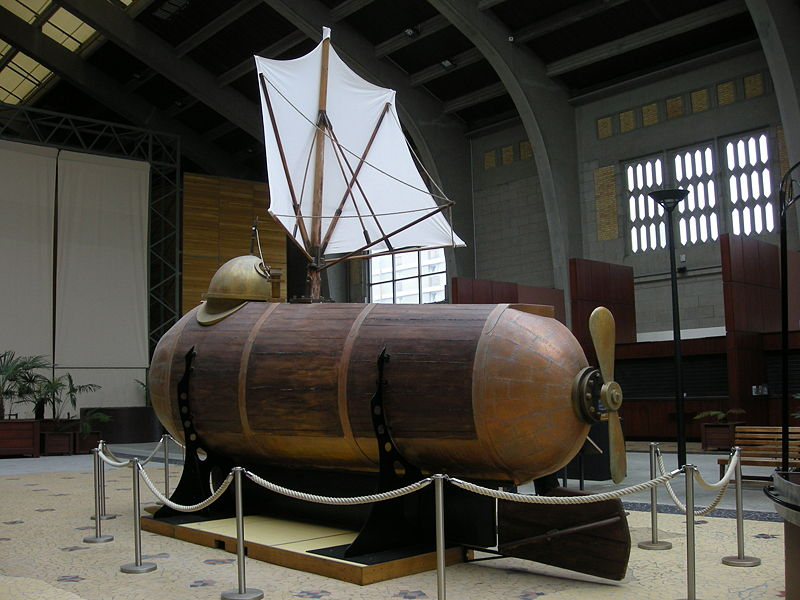
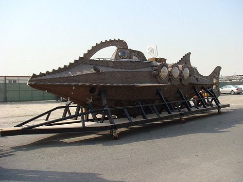

Підводний човен
Насправді Жуль Верн найчастіше передбачав не появу нових технологій, а напрямок розвитку вже існуючих. Найбільш наочно це можна показати на прикладі знаменитого «Наутілуса».
Перші проекти і навіть робочі прототипи підводних судів з'явилися задовго до народження самого Верна. Більш того, до моменту, коли він приступив до роботи над «20 000 льє під водою», у Франції вже спускали на воду першу механічний підводний човен, який охрестили «Пірнальник», - і Верн збирав про нього відомості, перш ніж зайнявся романом.
Але що являв собою «Пірнальник»? На борту судна ледь поміщалася команда з 12 осіб, воно могло занурюватися не більше ніж на 10 метрів і розвивати під водою швидкість лише в 4 вузли.
Назву «Наутілус» носив прототип підводного човна, який ще в 1800 році зробив для Наполеона американець Роберт Фултон.
На цьому тлі характеристики і можливості «Наутілуса» виглядали абсолютно неймовірними. Комфортний, як океанський лайнер, і прекрасно пристосований для тривалих експедицій підводний човен з глибиною занурення, яка обчислювалася кілометрами, і граничною швидкістю в 50 вузлів.
Фантастика! Причому до цих пір. Як це не раз траплялося з Верном, він переоцінив можливості не тільки сучасних йому, але і майбутніх технологій. Навіть атомні субмарини XXI століття не здатні змагатися в швидкості з «Наутилусом» і повторювати ті маневри, які він робив граючись.
Не можуть вони і обходитися без дозаправки і поповнення запасів стільки часу, скільки міг «Наутілус». І, зрозуміло, з нинішніми підводними човнами ні за що не впорається один чоловік - а Немо продовжував плавати на «Наутілус» і після того, як втратив всю команду. З іншого боку, на судні була відсутня система регенерації повітря, для поповнення його запасу капітану Немо потрібно було раз в п'ять днів підніматися на поверхню.
Незважаючи на все це, не можна не визнати, що загальні тенденції розвитку підводних кораблів Верн передбачив з вражаючою точністю. Здатність субмарин здійснювати тривалі автономні подорожі, масштабні битви між ними, дослідження з їх допомогою морських глибин і навіть похід під льодами до полюса (Північного, звичайно, а не Південного - тут Верн помилився) - все це стало реальністю. Правда, лише в другій половині XX століття з появою технологій, про які Верн навіть не мріяв, - зокрема, атомної енергетики. Перший в світі атомний підводний човен символічно назвали «Наутилусом».
У 2006 році компанія Exomos створила діючий підводний човен, максимально наближений до літературного «Наутілуса», - принаймні в тому, що стосується зовнішнього вигляду. Судно використовується для розваги туристів, які відвідують Дубай.
